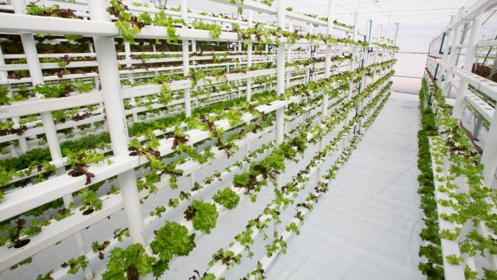

Notícias cidade
Destaque
Novas Tecnologias

Novas tecnologias: TOP 5 tecnologias que vão mudar o mundo!
Com toda certeza, se você perguntasse a qualquer pessoa meio século atrás o que ela esperava do futuro, ela não seria capaz de imaginar que atualmente estamos todos conectados em uma rede virtual, enviando e recebendo informações em milésimos de segundos. Isso é devido ao fato de que novas tecnologias surgem e reinventam o nosso modo de viver e enxergar o mundo a todo instante.
A seguir, você confere uma lista de novas tecnologias que estão emergindo e que prometem impactar profundamente os rumos da humanidade, contribuindo para a melhoria da qualidade de vida dos seres humanos. Além de poder conferir o que é e qual o uso de tal tecnologia, você ainda terá acesso ao seu status, ou seja, em qual das etapas descritas no parágrafo acima ela se encontra. Vamos lá?
1. Tela flexível
Para que serve?
A criação pensada no conforto da pessoa usuária permite que a qualidade e visualização de fotos sejam cada vez mais nítidas, variando de suas marcas e modelos. Portanto, as telas flexíveis possibilitam um maior desempenho em seu aparelho além da praticidade de “dobrar” o aparelho e colocá-lo facilmente em um bolso ou carteira de mão.
2. Plantação vertical

O que é?
É a ideia de produzir plantações em superfícies inclinadas verticalmente. Em vez de cultivar vegetais e outros milhares de alimentos em um único espaço como em campos geralmente planos ou em estufas, o método permite a produção em estruturas verticais, como em paredes de prédios, cercas vivas, casas, entre outros.
Para que serve?
Tendo como objetivo principal a maximização da produção de safras em espaços limitados, essa nova tecnologia possibilia uma qualidade ainda maior dos produtos que nela foram plantados, permitindo o uso menor de água em seu processo de crescimento e menor exposição de produtos químicos, além da possibilidade de desenvolvimento durante o ano todo.
3. Propulsor de íons
O que é?
É uma forma de propulsão elétrica muito utilizada para impulsionar aeronaves, criando o “empurrão” que acelera os íons, que se movimentam por eletricidade. O método de aceleração dessa nova tecnologia varia, mas em todos os projetos se utiliza da relação carga / massa dos íons e a proporção.
Para que serve?
Um propulsor de íons libera um gás neutro ao extrair elétrons de átomos, desenvolvendo uma nuvem de íons positivos tendo como sentido a diferença nas potências relativamente pequenas, podendo criar altas velocidades de exaustão reduzindo a quantidade de massa de reação. Esse movimento é essencial para a evolução das estruturas aeroespaciais.
4. Impressão 4D
O que é?
Ela adiciona adimensão da transformação durante seu tempo de impressão, levando em consideração fatores e ferramentas importantes como, umidade, temperatura, tamanho, etc. Isso significa que a estrutura pode ser alterada depois de pronta, diferentemente da estrutura impressa em 3D.
Para que serve?
Objetos que sejam maiores que a impressora, por exemplo, podem ser impressos parcialmente, assumindo sua real forma posteriormente. Logo, a impressora 4D não é tão limitada e rígida quanto sua predecessora, representando uma nova tecnologia essencial na área de impressão!
5. Arcologia
O que é?
É um campo de criação de ideias e princípios de projetos arquitetônicos para habitats humanos extremamente povoados e com baixo impacto ecológico. Portanto, um projeto da arcologia se distingue de uma construção meramente grande por ter sido projetado para reduzir impactos da habitação humana no ecossistema.
Para que serve?
Sua proposta é a projeção e redução do impacto humano sobre os recursos naturais, a fim de empregar quase todos os recursos disponíveis para uma vida confortável, como energia, produção de alimentos, purificação de água e ar e o controle do clima, podendo aplicar técnicas convencionais da área de engenharia civil em projetos razoavelmente grandes.